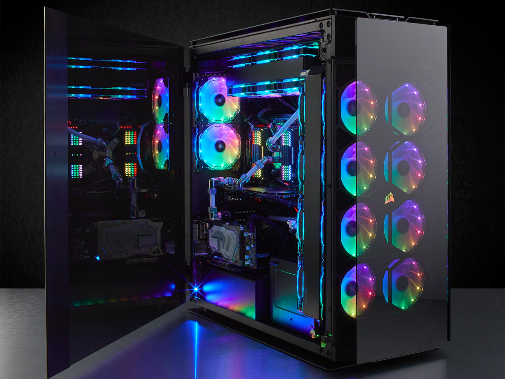

Case

Computer Cases (also known as Computer Chassis) serves as a way to physically
mount and hold all the components inside the computer, including the motherboard, hard drive, etc. It also
protects the components from dust, liquid, etc. which can damage the internal parts of a computer. A case
with good airflow can help cool of the hardware components which helps prevent overheat and malfunction.
Different Sizes of Cases:
- + EATX (Extended Advanced Technology EXtended) - Full Tower Case
- + ATX (Advanced Technology EXtended) - Mid Tower Case
- + MicroATX (Micro Advanced Technology EXtended) - Mini Tower Case
- + Mini-ITX (Mini Information Technology EXtended) - Small Form Factor Case